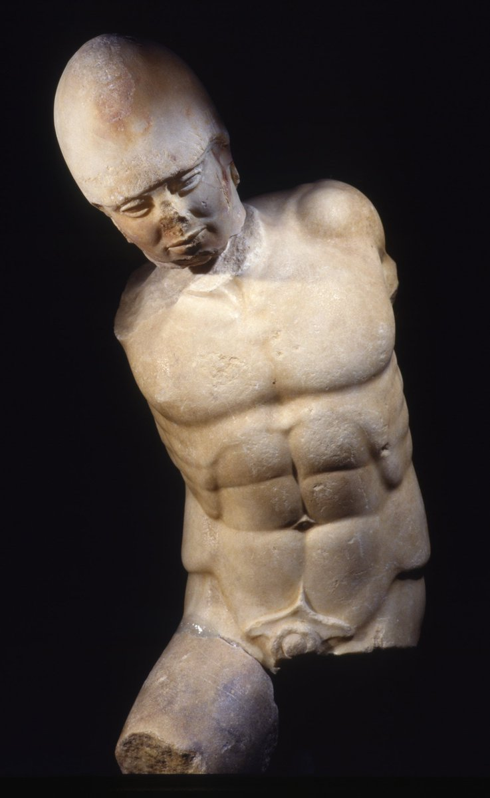
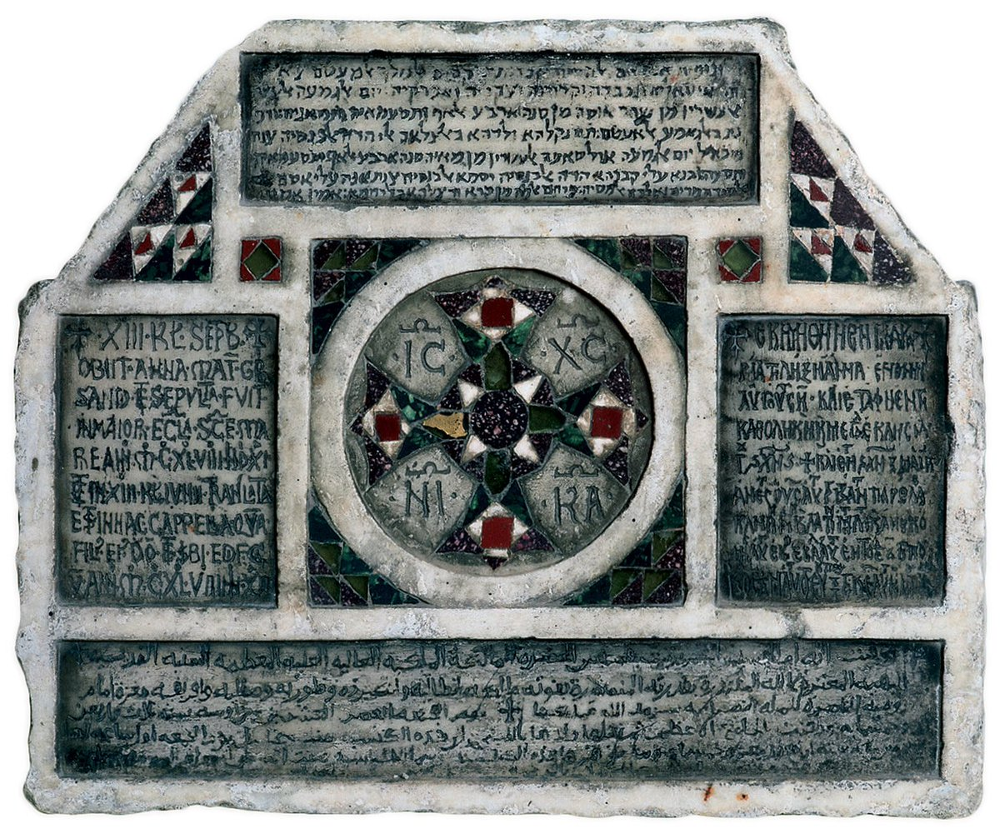
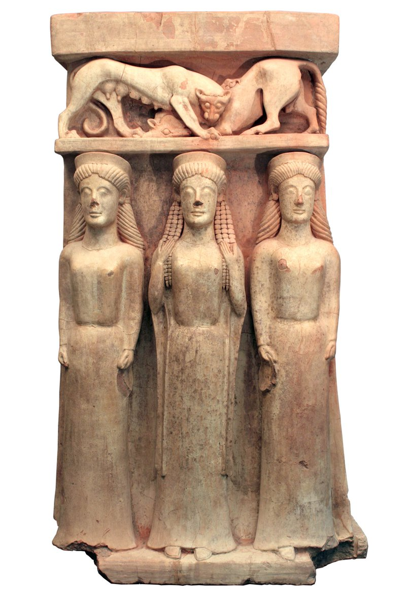
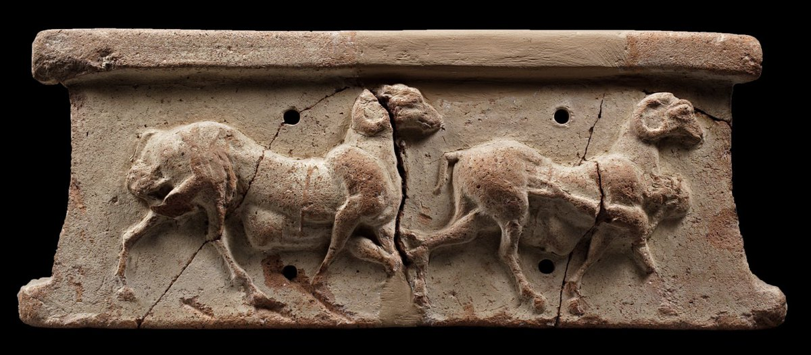

#SicilyExhibition Q&A
Curators Dirk Booms and Peter Higgs joined us for a Twitter Q&A about the exhibition Sicily: culture and conquest (21 April – 14 August 2016)
-
We’re here with #SicilyExhibition curators Dirk & Peter for our Twitter Q&A. What do you want to ask them? pic.twitter.com/zuynJo313I
-
@britishmuseum What's your favourite place in Sicily and why? I have family in Agrigento so I'm really looking forward to to the exhibition!
-
Curator Dirk Booms: My favourite place is Syracuse market, a taste of the real Sicily http:// ow.ly/4nsRbI pic.twitter.com/xjep7rK94T
-
Curator Peter Higgs: You cannot beat wandering around the gigantic ruins and well-preserved temples in Agrigento pic.twitter.com/XafljcpWat
-
1/2 @britishmuseum loved the exhibition and fascinated by the Augustus-like bust of Frederick II and figurines asserting imperial likeness.
-
2/2 @britishmuseum Is this evidence of a dominant cultural influence in Sicily at this time or was it a truly cosmopolitan society?
-
 His intention was to found an empire as glorious as the Roman Empire – hence his Augustan-style portraiture (3/3) #SicilyExhibition
His intention was to found an empire as glorious as the Roman Empire – hence his Augustan-style portraiture (3/3) #SicilyExhibition -
. @britishmuseum Why is the marble warrior statue from ancient Akragas (now #Girgenti ) so important for the #SicilyExhibition ? #SicilyCulture
-
Marble Greek-style statues are a rare find on Sicily. Recent conservation has also revealed traces of colour (2/2) pic.twitter.com/VQBVzrZbPl
-
@britishmuseum Hi! Am coming to #SicilyExhibition Q. What are your favourite "must sees" from Norman period?
-
Curator Dirk: This wooden panel was created by Fatimid craftsmen from Egypt for the Norman Palace in Palermo ... pic.twitter.com/J0Dte6QsUY
-
... And this tombstone for Anna was written in 4 languages, those of the 4 different peoples and cultures on Sicily pic.twitter.com/1ldXrp7aoN
-
. @britishmuseum Many in UK will think Normans & the immediate reference is 1066. Did Norman rule of Sicily have any influence on them here?
-
Later, Sicilian Norman King William II married Joan Plantagenet, daughter of Henry II. #SicilyExhibition
-
 @britishmuseum many of the objects at #SicilyExhibition show how myth is used as a medium for cultural transmission across periods (1/2)
@britishmuseum many of the objects at #SicilyExhibition show how myth is used as a medium for cultural transmission across periods (1/2) -
@britishmuseum Are you planning a special event on myth in Sicily?What are the myths you came across when putting together the exhib.? (2/2)
-
Due to Sicily's fertile soil, Sicilian Greeks worshipped the goddesses of agriculture Demeter & Persephone above all pic.twitter.com/CbOXk2Z6RA
-
The legend of Persephone being taken into the underworld by her uncle Hades was adopted by the Greeks on Sicily: http:// ow.ly/4nsXsT
-
 @britishmuseum What is it like to be a curator of such exhibition?
@britishmuseum What is it like to be a curator of such exhibition? -
Curator Dirk: Exhilarating, but exhausting! It's wonderful to see it come together and be appreciated by so many #SicilyExhibition
-
@britishmuseum The #SicilyExhibition sounds like a great resource for writers to get inspiration. Any recommendations on where to start?
-
Homer's Odyssey was a tale of epic exploration and some of it allegedly took place on Sicily http:// ow.ly/4nsYP0 pic.twitter.com/GdX9otxtPb
-
One of the greatest Sicilian novels is 'The Leopard', recounting the years around Garibaldi's unification of Italy http:// ow.ly/4nsZqd
-
@britishmuseum would Peter & Dirk rather live in Archimedes' Syracuse or Roger II's Palermo? #SicilyExhibition
-
. @britishmuseum what is, in your opinion, the most beautiful and unique piece of the #SicilyExhibition ?
-
The only surviving mosaic from Palermo's Norman Cathedral is an exceptionally beautiful object in #SicilyExhibition pic.twitter.com/Fh3mFyTaEt
-
Thanks for all of your questions. Goodbye and good night from our #SicilyExhibition curators! 😊 pic.twitter.com/KUoNRFXT4k